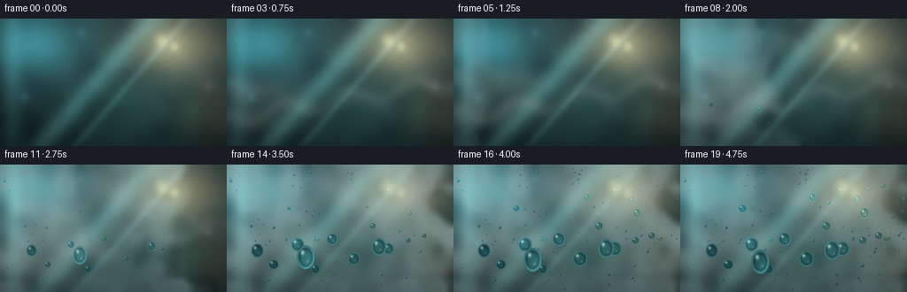
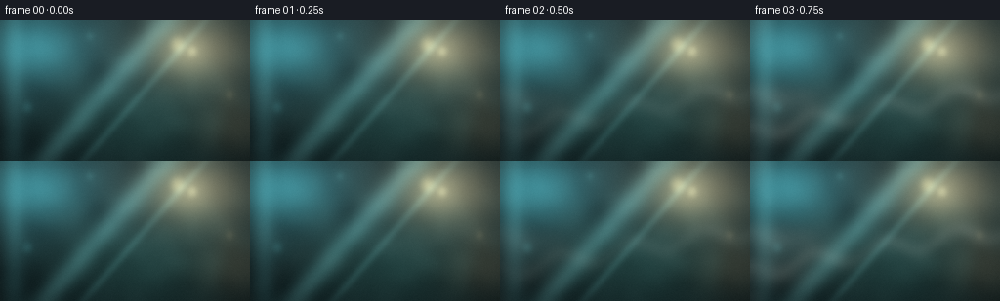

CODING AGENTS AS PIXEL WORLD MODELS
traex/DeepSeek-V4.1-Flash · phygen_101
点击播放 · 原生 RGB 像素
逐轮保存的候选
回放视频、检查图与代码变化。
每份候选均可单独播放。实际图片检查记录在下方工具轨迹中。
候选 01播放与检查图
点击播放 · 原生 RGB 像素


展开代码变化
--- 上一保存版本
+++ 本次保存版本
@@ -0,0 +1,425 @@
+from __future__ import annotations
+
+import math
+from pathlib import Path
+
+import cv2
+import imageio_ffmpeg
+import numpy as np
+from scipy.ndimage import gaussian_filter
+
+import artifact_io
+
+
+ROOT = Path(__file__).resolve().parent
+WIDTH, HEIGHT, FRAME_COUNT, FPS = 256, 144, 20, 4.0
+SS = 3
+W, H = WIDTH * SS, HEIGHT * SS
+RNG = np.random.default_rng(1049)
+
+
+def smoothstep(edge0, edge1, x):
+ denominator = np.asarray(edge1) - np.asarray(edge0)
+ if denominator.ndim == 0 and abs(float(denominator)) < 1e-6:
+ return (np.asarray(x) >= edge1).astype(np.float32)
+ t = np.clip((x - edge0) / (edge1 - edge0), 0.0, 1.0)
+ return t * t * (3.0 - 2.0 * t)
+
+
+def fbm(shape: tuple[int, int], seed: int, octaves: int = 5) -> np.ndarray:
+ rng = np.random.default_rng(seed)
+ h, w = shape
+ result = np.zeros(shape, dtype=np.float32)
+ weight_sum = 0.0
+ for octave in range(octaves):
+ scale = 2 ** octave
+ low = rng.normal(0.0, 1.0, (max(3, h // (32 * scale)), max(4, w // (32 * scale))))
+ low = gaussian_filter(low.astype(np.float32), 0.75)
+ field = cv2.resize(low, (w, h), interpolation=cv2.INTER_CUBIC)
+ weight = 0.58 ** octave
+ result += weight * field
+ weight_sum += weight
+ result /= weight_sum
+ result -= result.min()
+ result /= max(float(result.max()), 1e-6)
+ return result
+
+
+def make_background() -> tuple[np.ndarray, np.ndarray]:
+ yy, xx = np.mgrid[0:H, 0:W].astype(np.float32)
+ x = xx / (W - 1)
+ y = yy / (H - 1)
+
+ top = np.array([52, 72, 74], dtype=np.float32)
+ bottom = np.array([17, 29, 31], dtype=np.float32)
+ ramp = smoothstep(0.0, 1.0, y)[..., None]
+ image = top * (1.0 - ramp) + bottom * ramp
+
+ def glow(cx, cy, sx, sy, color, strength):
+ nonlocal image
+ d = ((x - cx) / sx) ** 2 + ((y - cy) / sy) ** 2
+ field = np.exp(-d)[..., None]
+ image += np.array(color, dtype=np.float32) * field * strength
+
+ glow(0.80, 0.20, 0.22, 0.27, (180, 120, 75), 0.65)
+ glow(0.13, 0.18, 0.20, 0.26, (47, 129, 139), 0.70)
+ glow(0.58, 0.72, 0.40, 0.34, (39, 70, 59), 0.38)
+ glow(0.96, 0.75, 0.17, 0.22, (129, 83, 55), 0.36)
+
+ # Out-of-focus highlights behind the glass.
+ lights = [
+ (0.71, 0.17, 0.043, 0.085, (244, 191, 127), 1.00),
+ (0.77, 0.22, 0.030, 0.060, (255, 218, 164), 0.90),
+ (0.11, 0.62, 0.030, 0.062, (110, 205, 207), 0.55),
+ (0.92, 0.53, 0.023, 0.047, (222, 152, 98), 0.55),
+ (0.36, 0.11, 0.018, 0.035, (148, 217, 210), 0.48),
+ ]
+ for cx, cy, sx, sy, color, strength in lights:
+ d = ((x - cx) / sx) ** 2 + ((y - cy) / sy) ** 2
+ core = np.clip(1.0 - d, 0.0, 1.0) ** 2.2
+ halo = np.exp(-d * 0.23)
+ image += np.array(color, dtype=np.float32) * (
+ 0.24 * core + 0.12 * halo
+ )[..., None] * strength
+
+ low_cloud = fbm((H, W), 21, 4)[..., None]
+ image += (low_cloud - 0.5) * np.array([15, 20, 19], dtype=np.float32)
+ image = gaussian_filter(image, sigma=(2.1 * SS, 2.1 * SS, 0))
+
+ # Glass tint and its broad, cool reflection.
+ glass_tint = np.array([0.87, 1.00, 1.02], dtype=np.float32)
+ image *= glass_tint
+ u = x * 0.90 + y * 0.44
+ streak = np.exp(-((u - 0.60) / 0.055) ** 2)
+ streak += 0.45 * np.exp(-((u - 0.74) / 0.021) ** 2)
+ image += streak[..., None] * np.array([30, 50, 50], dtype=np.float32)
+
+ # Fine glass texture and a restrained vignette.
+ grain = fbm((H, W), 58, 3)
+ image += (grain[..., None] - 0.5) * np.array([5.0, 5.5, 5.0], dtype=np.float32)
+ vignette = 1.0 - 0.34 * (((x - 0.5) / 0.64) ** 2 + ((y - 0.5) / 0.78) ** 2)
+ image *= np.clip(vignette, 0.56, 1.0)[..., None]
+
+ # Soft focus falls off at the very edges, keeping the condensation central.
+ focus = gaussian_filter(image, sigma=(8 * SS, 8 * SS, 0))
+ edge = smoothstep(0.10, 0.0, np.minimum(np.minimum(x, 1 - x), np.minimum(y, 1 - y)))
+ image = image * (1.0 - 0.32 * edge[..., None]) + focus * (0.32 * edge[..., None])
+ return np.clip(image, 0, 255), image.copy()
+
+
+def make_droplets() -> list[dict]:
+ rng = np.random.default_rng(991)
+ droplets = []
+
+ # A broad population of small nuclei, denser toward the lower-left vapor front.
+ for _ in range(315):
+ x = float(np.clip(rng.beta(1.38, 1.0), 0.015, 0.985))
+ y = float(np.clip(rng.beta(1.08, 1.35), 0.025, 0.975))
+ onset = 0.18 + 0.52 * x + rng.uniform(-0.10, 0.15)
+ radius = float(np.exp(rng.normal(-0.30, 0.48)))
+ radius = np.clip(radius, 0.48, 3.6)
+ if rng.random() < 0.08:
+ radius *= 1.7
+ droplets.append(
+ {
+ "x": x,
+ "y": y,
+ "onset": float(np.clip(onset, 0.14, 0.76)),
+ "radius": float(radius),
+ "sx": float(rng.uniform(0.86, 1.14)),
+ "sy": float(rng.uniform(0.90, 1.18)),
+ "phase": float(rng.uniform(0, 2 * math.pi)),
+ "depth": float(rng.uniform(0.0, 1.0)),
+ }
+ )
+
+ # Distinct foreground beads make the condensation legible at 256 px wide.
+ feature_points = [
+ (0.14, 0.68, 7.2, 0.31),
+ (0.22, 0.78, 5.6, 0.38),
+ (0.31, 0.62, 8.8, 0.42),
+ (0.39, 0.82, 5.1, 0.34),
+ (0.47, 0.57, 6.9, 0.46),
+ (0.56, 0.73, 9.4, 0.49),
+ (0.64, 0.49, 5.3, 0.53),
+ (0.72, 0.66, 7.7, 0.50),
+ (0.80, 0.38, 5.8, 0.59),
+ (0.87, 0.57, 4.7, 0.55),
+ (0.28, 0.34, 4.5, 0.60),
+ (0.59, 0.27, 4.2, 0.64),
+ ]
+ for i, (x, y, radius, onset) in enumerate(feature_points):
+ droplets.append(
+ {
+ "x": x + rng.uniform(-0.012, 0.012),
+ "y": y + rng.uniform(-0.015, 0.015),
+ "onset": onset,
+ "radius": radius,
+ "sx": 1.0 + 0.08 * math.sin(i * 2.1),
+ "sy": 1.06 + 0.10 * math.cos(i * 1.7),
+ "phase": i * 0.83,
+ "depth": 0.2,
+ }
+ )
+
+ # Two mature drops begin to run late in the timelapse.
+ droplets.append(
+ {
+ "x": 0.35,
+ "y": 0.71,
+ "onset": 0.34,
+ "radius": 11.2,
+ "sx": 0.91,
+ "sy": 1.24,
+ "phase": 0.4,
+ "depth": 0.0,
+ "slide": 0.052,
+ }
+ )
+ droplets.append(
+ {
+ "x": 0.67,
+ "y": 0.64,
+ "onset": 0.43,
+ "radius": 9.8,
+ "sx": 0.94,
+ "sy": 1.18,
+ "phase": 2.4,
+ "depth": 0.0,
+ "slide": 0.031,
+ }
+ )
+ return droplets
+
+
+BACKGROUND, CLEAR_GLASS = make_background()
+DROPLETS = make_droplets()
+FOG_CLOUD = fbm((H, W), 307, 6)
+FOG_FINE = fbm((H, W), 411, 5)
+
+
+def condensation_field(progress: float) -> np.ndarray:
+ yy, xx = np.mgrid[0:H, 0:W].astype(np.float32)
+ x = xx / (W - 1)
+ y = yy / (H - 1)
+ growth = float(smoothstep(0.02, 0.80, progress))
+ front = -0.08 + 1.18 * growth
+ turbulent_edge = (FOG_CLOUD - 0.5) * 0.32
+ lateral = smoothstep(front + turbulent_edge, front - 0.18 + turbulent_edge, x)
+ vertical = smoothstep(1.02, 0.64, y + 0.06 * (FOG_CLOUD - 0.5))
+ patchy = 0.24 + 0.76 * np.clip(FOG_CLOUD * 1.18 + 0.16 * FOG_FINE, 0, 1)
+ density = lateral * (0.66 + 0.34 * vertical) * patchy
+ density *= 0.055 + 0.70 * growth
+
+ # The film thins slightly as droplets take over the surface.
+ coalesced = smoothstep(0.68, 1.0, progress)
+ density *= 1.0 - 0.17 * coalesced
+ return np.clip(density, 0.0, 0.72)
+
+
+def apply_fog(image: np.ndarray, density: np.ndarray, progress: float) -> np.ndarray:
+ fog_color = np.array([178, 205, 204], dtype=np.float32)
+ # A cool scatter layer, followed by tiny visible droplets in the film.
+ alpha = density[..., None] * 0.72
+ out = image * (1.0 - alpha) + fog_color * alpha
+ speck = np.clip((FOG_FINE - 0.63) * 4.5, 0, 1)
+ speck *= smoothstep(0.34, 0.78, progress) * 0.24
+ out += speck[..., None] * np.array([35, 45, 44], dtype=np.float32)
+ return out
+
+
+def vapor_layer(progress: float) -> np.ndarray:
+ yy, xx = np.mgrid[0:H, 0:W].astype(np.float32)
+ x = xx / (W - 1)
+ y = yy / (H - 1)
+ layer = np.zeros((H, W), dtype=np.float32)
+ visibility = smoothstep(0.02, 0.16, progress) * (1.0 - smoothstep(0.48, 0.80, progress))
+
+ # Soft, moving rolls of vapor enter from the lower-left and flatten on the pane.
+ for i, (start_x, start_y, size, delay, speed) in enumerate(
+ [
+ (-0.08, 0.74, 0.31, 0.00, 0.31),
+ (-0.16, 0.88, 0.24, 0.04, 0.37),
+ (0.02, 0.59, 0.19, 0.08, 0.29),
+ (-0.10, 0.48, 0.16, 0.13, 0.25),
+ ]
+ ):
+ local = smoothstep(delay, delay + 0.23, progress)
+ cx = start_x + speed * local
+ cy = start_y - 0.10 * local + 0.015 * math.sin(i * 2.0 + progress * 9)
+ wobble = 0.18 * (FOG_FINE - 0.5)
+ d = ((x - cx - wobble) / (size * 1.55)) ** 2 + ((y - cy) / (size * 0.72)) ** 2
+ wisp = np.exp(-d * 2.3) * (0.36 + 0.64 * FOG_CLOUD)
+ layer += wisp * (0.20 + 0.08 * i)
+
+ # Turbulent plume filaments.
+ flow_x = x - progress * 0.26
+ filament = np.exp(-((y - (0.79 - 0.30 * x + 0.055 * np.sin(flow_x * 22))) / 0.050) ** 2)
+ filament *= smoothstep(-0.12, 0.18, flow_x) * (1.0 - smoothstep(0.47, 0.82, progress))
+ layer += filament * (0.18 + 0.22 * FOG_FINE)
+
+ layer *= visibility
+ layer = gaussian_filter(layer, sigma=4.0 * SS)
+ return np.clip(layer, 0, 1)
+
+
+def render_droplet(
+ image: np.ndarray,
+ clear: np.ndarray,
+ cx: float,
+ cy: float,
+ radius: float,
+ sx: float,
+ sy: float,
+ depth: float,
+) -> None:
+ r = radius * SS
+ rx = r * sx
+ ry = r * sy
+ margin = 1.75
+ x0 = max(0, int(cx - rx * margin))
+ x1 = min(W, int(cx + rx * margin) + 2)
+ y0 = max(0, int(cy - ry * margin))
+ y1 = min(H, int(cy + ry * margin) + 2)
+ if x0 >= x1 or y0 >= y1:
+ return
+
+ yy, xx = np.mgrid[y0:y1, x0:x1].astype(np.float32)
+ dx = (xx - cx) / max(rx, 1e-4)
+ dy = (yy - cy) / max(ry, 1e-4)
+ d2 = dx * dx + dy * dy
+ inside = d2 < 1.0
+ if not np.any(inside):
+ return
+ inside_float = inside.astype(np.float32)
+
+ # Spherical cap normals and an inverted, slightly enlarged refracted image.
+ z = np.sqrt(np.clip(1.0 - d2, 0.0, 1.0))
+ src_x = np.clip(cx - dx * r * (0.72 + 0.17 * depth), 0, W - 1).astype(np.int32)
+ src_y = np.clip(cy - dy * r * (0.68 + 0.16 * depth), 0, H - 1).astype(np.int32)
+ refracted = clear[src_y, src_x].astype(np.float32)
+
+ # Liquid absorbs a little warmth while concentrating the cool background.
+ refracted = refracted * np.array([0.90, 1.04, 1.07], dtype=np.float32)
+ refracted += np.array([4, 13, 15], dtype=np.float32) * z[..., None]
+
+ radial = np.sqrt(np.clip(d2, 0.0, 1.0))
+ outer_rim = np.exp(-((radial - 0.88) / 0.105) ** 2)
+ inner_shadow = np.exp(-((radial - 0.72) / 0.16) ** 2)
+ refracted *= (0.88 + 0.24 * z)[..., None]
+ refracted *= (1.0 - 0.20 * inner_shadow)[..., None]
+ refracted += outer_rim[..., None] * np.array([29, 55, 57], dtype=np.float32)
+
+ # Upper-left window reflection plus a much weaker bounce light.
+ hx = dx + 0.35
+ hy = dy + 0.39
+ highlight = np.exp(-(hx * hx + hy * hy) / 0.038)
+ hx2 = dx - 0.22
+ hy2 = dy - 0.34
+ bounce = np.exp(-(hx2 * hx2 + hy2 * hy2) / 0.010)
+ refracted += highlight[..., None] * np.array([205, 225, 218], dtype=np.float32) * 0.56
+ refracted += bounce[..., None] * np.array([76, 111, 109], dtype=np.float32) * 0.42
+
+ # Soft antialiased circumference and a faint contact shadow.
+ aa = np.clip((1.0 - np.sqrt(d2)) * r * 0.62, 0.0, 1.0)
+ shadow = np.exp(-(((dx - 0.09) / 1.06) ** 2 + ((dy - 0.13) / 1.05) ** 2) * 6.0)
+ image_patch = image[y0:y1, x0:x1]
+ image_patch *= (1.0 - 0.16 * (1.0 - inside_float) * shadow)[..., None]
+ mix = (aa * inside_float)[..., None]
+ image[y0:y1, x0:x1] = image_patch * (1.0 - mix) + refracted * mix
+
+
+def render_frame(index: int) -> np.ndarray:
+ progress = index / (FRAME_COUNT - 1)
+ image = BACKGROUND.copy()
+ fog = condensation_field(progress)
+ image = apply_fog(image, fog, progress)
+
+ # Dark sliding tracks are laid down before the droplets themselves.
+ for drop in DROPLETS:
+ if "slide" not in drop:
+ continue
+ local = smoothstep(drop["onset"] + 0.22, 1.0, progress)
+ if local <= 0:
+ continue
+ x = drop["x"] * W
+ y0 = (drop["y"] + 0.012) * H
+ y1 = (drop["y"] + drop["slide"] * local + 0.012) * H
+ width = max(1, int(drop["radius"] * SS * 0.16))
+ cv2.line(
+ image,
+ (int(x), int(y0)),
+ (int(x), int(y1)),
+ (43.0, 55.0, 55.0),
+ width,
+ cv2.LINE_AA,
+ )
+
+ ordered = sorted(DROPLETS, key=lambda d: d["depth"], reverse=True)
+ for drop in ordered:
+ local = smoothstep(drop["onset"], min(drop["onset"] + 0.38, 0.98), progress)
+ if local <= 0:
+ continue
+ radius = drop["radius"] * (0.06 + 0.94 * local ** 0.74)
+ if radius * SS < 0.42:
+ continue
+ slide = drop.get("slide", 0.0) * smoothstep(drop["onset"] + 0.24, 1.0, progress)
+ cx = (drop["x"] + 0.0025 * math.sin(index * 0.73 + drop["phase"])) * W
+ cy = (drop["y"] + slide) * H
+ render_droplet(
+ image,
+ CLEAR_GLASS,
+ cx,
+ cy,
+ radius,
+ drop["sx"],
+ drop["sy"],
+ drop["depth"],
+ )
+
+ # The humid air remains visible as a warm-white veil over the incoming side.
+ vapor = vapor_layer(progress)
+ vapor_color = np.array([218, 224, 212], dtype=np.float32)
+ image = image * (1.0 - 0.44 * vapor[..., None]) + vapor_color * (0.44 * vapor[..., None])
+
+ # A cool bloom on the outer glass edge reinforces the temperature contrast.
+ yy, xx = np.mgrid[0:H, 0:W].astype(np.float32)
+ x = xx / (W - 1)
+ y = yy / (H - 1)
+ edge_glow = np.exp(-((x - 0.055) / 0.045) ** 2) * (0.50 + 0.50 * np.exp(-((y - 0.47) / 0.38) ** 2))
+ image += edge_glow[..., None] * np.array([16, 31, 32], dtype=np.float32)
+
+ image = np.clip(image, 0, 255)
+ small = cv2.resize(image, (WIDTH, HEIGHT), interpolation=cv2.INTER_AREA)
+ # Very light temporal grain keeps the condensation from looking like flat vector art.
+ grain_rng = np.random.default_rng(9000 + index)
+ grain = grain_rng.normal(0.0, 0.85, (HEIGHT, WIDTH, 1)).astype(np.float32)
+ small = np.clip(small + grain, 0, 255)
+ return small.astype(np.uint8)
+
+
+def main() -> None:
+ frames = np.stack([render_frame(i) for i in range(FRAME_COUNT)])
+ artifact_io.save(frames, ROOT)
+
+ ffmpeg = imageio_ffmpeg.get_ffmpeg_exe()
+ writer = imageio_ffmpeg.write_frames(
+ str(ROOT / "rgb_video.mp4"),
+ (WIDTH, HEIGHT),
+ fps=FPS,
+ codec="libx264",
+ pix_fmt_out="yuv420p",
+ quality=8,
+ macro_block_size=1,
+ ffmpeg_log_level="error",
+ ffmpeg_timeout=60,
+ )
+ writer.send(None)
+ for frame in frames:
+ writer.send(frame)
+ writer.close()
+ print(f"wrote {FRAME_COUNT} frames at {WIDTH}x{HEIGHT}, {FPS:g} fps using {ffmpeg}")
+
+
+if __name__ == "__main__":
+ main()
可观测工具轨迹
实际执行的命令与返回图片。
命令 1exit 0
/bin/bash -c "sed -n '1,240p' prompt.txt"
命令 2exit 0
/bin/bash -c "sed -n '1,280p' GENERATION_RULES.md"
命令 3exit 0
/bin/bash -c 'cat task_spec.json'
命令 4exit 0
/bin/bash -c "printf 'FILES\\n'; rg --files -g '"'!*.mp4'"' -g '"'!*.webm'"' | sed -n '1,240p'; printf 'TOOLS\\n'; command -v ffmpeg; command -v blender; command -v python3; python3 - <<'PY' mods=['numpy','PIL','cv2','imageio','matplotlib','moderngl','pygame','cairo','scipy'] for m in mods: try: mod=__import__(m); print(m, getattr(mod,'__version__','ok')) except Exception as e: print(m,'MISSING') PY"
命令 5exit 0
/bin/bash -c "sed -n '1,260p' artifact_io.py"
命令 6exit 0
/bin/bash -c "sed -n '1,260p' player_template.html"
命令 7exit 0
/bin/bash -c "ffmpeg -version | sed -n '1,3p'; git status --short"
命令 8exit 0
/bin/bash -c "python3 - <<'PY'
try:
import imageio_ffmpeg
print('imageio_ffmpeg',imageio_ffmpeg.__version__,imageio_ffmpeg.get_ffmpeg_exe())
except Exception as e: print('imageio_ffmpeg missing',e)
import cv2
print('cv2',cv2.__version__)
PY"命令 9exit 1
/bin/bash -c 'MPLCONFIGDIR=.tmp/mpl python3 generate.py'
命令 10exit 1
/bin/bash -c 'MPLCONFIGDIR=.tmp/mpl python3 generate.py'
命令 11exit 1
/bin/bash -c 'MPLCONFIGDIR=.tmp/mpl python3 generate.py'
命令 12exit 0
/bin/bash -c 'MPLCONFIGDIR=.tmp/mpl python3 generate.py'
命令 13exit 1
/bin/bash -c 'command -v chafa; command -v viu; command -v jp2; command -v img2txt; command -v viu'
命令 14exit 0
/bin/bash -c "python3 - <<'PY'
from PIL import Image
import numpy as np
for i in [0,5,10,15,19]:
im=np.asarray(Image.open(f'frames/{i:02d}.png').convert('L').resize((64,36)))
chars=' .:-=+*#%@'
print(f'\\nFRAME {i}')
for row in im:
print(''.join(chars[min(len(chars)-1,int(v)*len(chars)//256)] for v in row))
PY"命令 15exit 0
/bin/bash -c "ls -lh frames/*.png rgb_video.mp4 inspection.png transition_check.png pixels.npz index.html; python3 - <<'PY'
from PIL import Image
import numpy as np
ims=np.stack([np.asarray(Image.open(f'frames/{i:02d}.png')).astype(float) for i in range(20)])
print('shape',ims.shape,'range',ims.min(),ims.max())
for i in [0,4,9,14,19]:
a=ims[i]
print(i,'mean',a.mean((0,1)).round(1),'std',a.std((0,1)).round(1),'p10/90',np.percentile(a,[10,90]).round(1))
print('consecutive MAE',np.abs(np.diff(ims,axis=0)).mean((1,2,3)).round(2))
PY"命令 16exit 0
/bin/bash -c "python3 - <<'PY' import imageio_ffmpeg, subprocess p=imageio_ffmpeg.get_ffmpeg_exe() for args in [['-hide_banner','-i','rgb_video.mp4'],['-hide_banner','-i','rgb_video.mp4','-vf','scale=128:72','-f','null','-']]: r=subprocess.run([p,*args],capture_output=True,text=True) print(r.stderr[:1800]) PY"
命令 17exit 0
/bin/bash -c "python3 - <<'PY'
from PIL import Image
for name in ['inspection.png','transition_check.png']:
im=Image.open(name)
print(name,im.size)
# save smaller previews with nearest resampling for checking composition
im.resize((im.width//2,im.height//2),Image.Resampling.LANCZOS).save('.tmp/'+name)
PY"命令 18exit 0
/bin/bash -c "python3 - <<'PY'
from PIL import Image, ImageFilter
import numpy as np
for i in [0,10,19]:
im=np.asarray(Image.open(f'frames/{i:02d}.png').convert('L')).astype(float)
# downsample? native sobel magnitude and ascii crop center
gx=np.abs(np.diff(im,axis=1,prepend=im[:,:1])); gy=np.abs(np.diff(im,axis=0,prepend=im[:1,:]))
e=np.clip((gx+gy)*1.5,0,255)
small=np.asarray(Image.fromarray(e.astype(np.uint8)).resize((64,36),Image.Resampling.BOX))
chars=' .:-=+*#%@'
print(f'\\nEDGE FRAME {i}')
for row in small:
print(''.join(chars[min(9,int(v)*10//256)] for v in row))
PY"命令 19exit 0
/bin/bash -c "python3 - <<'PY'
from PIL import Image
import numpy as np
# Quantized RGB swatch table for frames to assess palette and composition.
for i in [0,10,19]:
a=np.asarray(Image.open(f'frames/{i:02d}.png'))
q=(a//32)*32+16
colors,counts=np.unique(q.reshape(-1,3),axis=0,return_counts=True)
order=np.argsort(counts)[-8:][::-1]
print(i,[(tuple(colors[j]),int(counts[j])) for j in order])
PY"命令 20exit 0
/bin/bash -c "python3 - <<'PY'
from PIL import Image
import numpy as np
for fi in [0,9,14,19]:
a=np.asarray(Image.open(f'frames/{fi:02d}.png')).astype(float)
print('\\n',fi)
for x,y,r in [(.14,.68,7.2),(.31,.62,8.8),(.56,.73,9.4),(.35,.71,11.2),(.67,.64,9.8)]:
cx,cy=int(x*256),int(y*144); R=int(r)
yy,xx=np.mgrid[-12:13,-15:16]; d=np.hypot(xx,yy)
patch=a[cy-12:cy+13,cx-15:cx+16]
inner=patch[d<r*.65].mean((0)); rim=patch[(d>r*.8)&(d<r*1.15)].mean((0)); out=patch[(d>r*1.4)&(d<r*1.8)].mean((0))
print((x,y),'in',inner.round(0),'rim',rim.round(0),'out',out.round(0))
PY"命令 21exit 0
/bin/bash -c "python3 - <<'PY'
from PIL import Image
import numpy as np
for i in [0,10,19]:
a=np.asarray(Image.open(f'frames/{i:02d}.png').convert('L'))
print(i,'unique',len(np.unique(a)),'p',np.percentile(a,[0,1,10,50,90,99,100]).round(1))
PY"命令 22exit 0
/bin/bash -c "python3 - <<'PY'
from PIL import Image
import numpy as np
for fi,x,y in [(14,.35,.71),(19,.35,.71),(19,.56,.73),(19,.67,.64),(19,.31,.62)]:
a=np.asarray(Image.open(f'frames/{fi:02d}.png').convert('L'))
cx,cy=int(x*256),int(y*144)
c=a[cy-12:cy+13,cx-16:cx+17]
chars=' .:-=+*#%@'
print(f'\\nframe {fi} center {x},{y}')
for row in c:
print(''.join(chars[min(9,int(v)*10//256)] for v in row))
PY"命令 23exit 0
/bin/bash -c "python3 - <<'PY'
import numpy as np
from PIL import Image
for i in [0,9,14,19]:
im=np.asarray(Image.open(f'frames/{i:02d}.png')).astype(float)
# block means in a 8x8 grid to understand luminance map
print('\\nframe',i)
for by in range(0,144,18):
print(' '.join(f'{im[by:by+18,bx:bx+32].mean():3.0f}' for bx in range(0,256,32)))
PY"命令 24exit 0
/bin/bash -c "python3 - <<'PY'
from PIL import Image
import numpy as np
im=np.asarray(Image.open('frames/19.png').convert('RGB')).astype(float)
# print central 120x80 crop downsampled as true RGB ANSI half-block chars
im=im[32:112,68:188]
# use 80x40 ANSI escapes with background/foreground upper/lower half block
for y in range(0,80,2):
s=''
for x in range(0,120):
top=im[y,x].astype(int); bot=im[min(y+1,79),x].astype(int)
s+=f'\\x1b[38;2;{top[0]};{top[1]};{top[2]}m\\x1b[48;2;{bot[0]};{bot[1]};{bot[2]}mâ'
print(s+'\\x1b[0m')
PY"命令 25exit 0
/bin/bash -c "python3 - <<'PY'
import json
from pathlib import Path
import cv2
import numpy as np
from PIL import Image
spec=json.loads(Path('task_spec.json').read_text())
frames=np.stack([np.asarray(Image.open(f'frames/{i:02d}.png')) for i in range(spec['frames'])])
print('png_array',frames.shape,frames.dtype)
print('png_range',int(frames.min()),int(frames.max()))
cap=cv2.VideoCapture('rgb_video.mp4')
count=0; decoded=[]
while True:
ok, frame=cap.read()
if not ok: break
decoded.append(frame); count+=1
cap.release()
print('decoded',count,'size',decoded[0].shape if decoded else None,'fps',cap.get(cv2.CAP_PROP_FPS) if False else 'checked_above')
print('duration',count/spec['fps'],'seconds')
print('artifact_sizes',{p.name:p.stat().st_size for p in [Path('rgb_video.mp4'),Path('pixels.npz'),Path('inspection.png'),Path('index.html')]})
assert frames.shape==(20,144,256,3) and frames.dtype==np.uint8
assert count==20
assert Path('generate.py').is_file()
print('contract_check=PASS')
PY
python3 -m py_compile generate.py"命令 26exit 0
/bin/bash -c "git status --short -- . | sed -n '1,120p'"
命令 27exit 0
/bin/bash -c 'git check-ignore -v rgb_video.mp4 frames/00.png generate.py index.html pixels.npz inspection.png || true; pwd'
保存候选 1 份；完成命令 27 次；可验证图片返回 0 张。原始 API 响应与完整日志保留在本地。